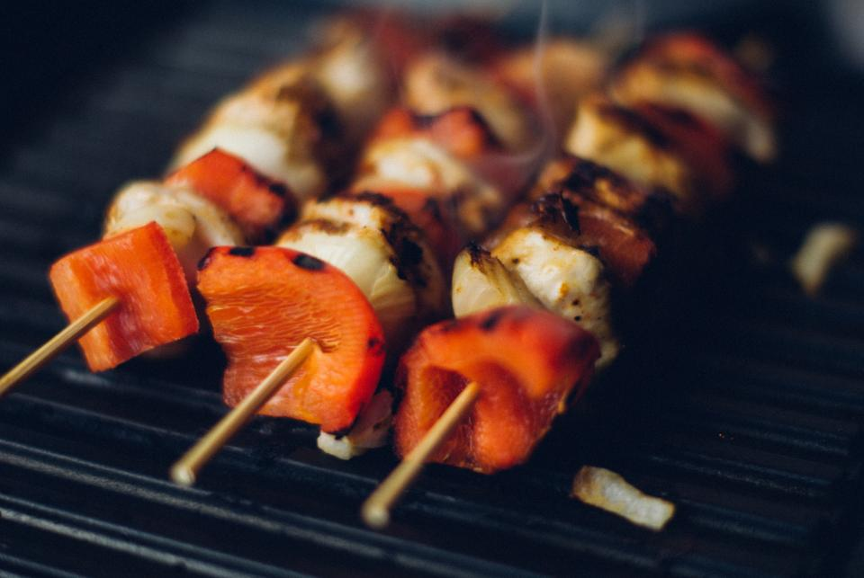

写真は貴店ご提供のものに差し替えます
柏の名店「トモサンカク」の肉
柏の名店「トモサンカク」の肉を使用。カルビ・ロース・ハラミ・サーロインまで、色々なカットと味わいをお手頃な価格でお楽しみいただけます。
2026年5月16日、取手駅東口から信号を渡ってすぐの角地にオープンした「焼肉酒場うしのみや」。柏の名店「トモサンカク」の肉を使用し、独特の傾斜が付いた無煙ロースターで煙や匂いを気にせず焼肉を楽しめます。内装は大工である店主自らが手がけた、木のぬくもりとガラスの開放感が共存する空間。オープンしたばかりの新店として、日々お客様の声に耳を傾けながら成長を続けています。
柏の名店「トモサンカク」の肉を使用。カルビ・ロース・ハラミ・サーロインまで、色々なカットと味わいをお手頃な価格でお楽しみいただけます。
独特の傾斜が付いた無煙ロースターを使用。サシの多い部位を焼いても煙が立たず、服やお席まわりのにおいを気にせず焼肉を満喫できます。
大工である店主自らが手がけた店内。大きなガラスの入り口から光が差し込む、明るく現代的な雰囲気の中でお食事いただけます。
野球で鍛えた明るい笑顔が印象的な店長と、感じの良いスタッフが皆さまをお迎えします。「居心地が良かった」「また伺いたい」というお声もいただいており、料理だけでなく空間全体でくつろいでいただけるお店を目指しています。
実際にご来店いただいたお客様からいただいた声を、良いものも厳しいものも含めてそのまま掲載しています。いただいたお言葉は真摯に受け止め、日々のお店づくりに活かしてまいります。
取手駅東口から信号を渡ってすぐの角地に出来た焼肉店。
柏の有名焼肉店の監修だそうで期待が膨らみます。
大きいガラスの入り口で明るく見える雰囲気で、現代的なデザインで少しのカウンターとテーブルが幾つか並ぶ店内で、明るい店員さんに案内いただきました。
メニューは、カルビ、ロース、ハラミ、サーロインで色々なカットと味付けがありましたがどれもお手頃な価格で驚きました。
【上ハラミ】999円【壷漬けガーリックハラミ】649円【炙りロース】999円【禁断の大判ロース】1,299円+ビール
を頼んで、5分程で順番に出てきました。
しっかり発色の良い肉で、どれも適度な大きさと厚さのカットが5枚程載った皿で、価格からしても見事です。
独特の傾斜が付いたガスコンロは、煙が立たない仕組みだそうで、サシの多い部分を焼いても煙が確かに出ず驚いました。
軽く焼いて頂きましたが、どれも素晴しい食感と旨味で驚きました。
今時ハラミを1,000円以下でこれだけのボリュームを頂けるお店も貴重です。
ロースも少しサシが多めの部位でしたが、非常に柔らかく赤身の旨味をしっかり美味しく楽しめました。
禁断の大判ロースは、軽く焼いて、卵黄に潜らせていただきましたが、一瞬で口中で溶けるような素晴らしい柔らかさと旨味を堪能できました。
また出来たばかりのようで、店員さんはバタバタされていましたが、肉質とボリュームと味わいで考えれば、素晴らしいお店だと思います。
またこのエリアに来た際は、必ず利用しようと思います。
新しくできた焼肉屋さん。
どれもリーズナブルなのにとても美味しいです。
店員さんも感じが良くて居心地良い🙆
柏のともさんかく監修との事！
初めて伺いました。
お店はできたばかりでとても綺麗でした。
値段もリーズナブルだと思いいろいろ頼んでみましたが全てではないですが肉が臭い！
呑み込むこともしたくないレベルでした。
提供前に確認出来ないのかなと思ってしまうレベルでした。残念です。
私はもう伺う事はないですが
今後改善されていく事願いたいと思います。
大切なご意見として真摯に受け止めております。ご不快な思いをさせてしまったことを深くお詫びするとともに、提供前の状態確認を含め、日々の品質管理の徹底に努めてまいります。
是非また伺いたいです！店長さんをはじめ、従業員の皆さんの人柄もとても良く、居心地の良いお店でした。
本日2026/05/16オープン
柏の名店「トモサンカク」の肉を使っているだけあって、味は抜群！肉寿司もとろける旨さでした。無煙台が素晴らしい🍖
内装は大工の店主自らが手掛けたそうで、こだわりが詰まった格好いい空間です。店長も野球で鍛えた最高の笑顔で頑張っています！
プレオープン中でオペレーションはこれからといった感じですが、熱意がすごくて応援したくなるお店。長い目で見守りつつ、また通わせてもらいます！
取手駅東口から信号を渡ってすぐの角地。大きなガラスの入り口が目印で、明るい店内が外からもよく見えます。お仕事帰りにもふらっと立ち寄れる好立地です。
PHOTO SAMPLE(フリー素材によるイメージ写真)
